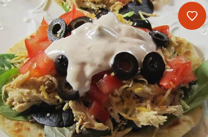

Ranch Chicken Tacos

These ranch chicken tacos are a great change from regular Mexican-style tacos. A quick, cool summer dinner made
with leftover rotisserie chicken.
Naturally, you can use any type of chicken cooked the way you like; just be
sure to shred it for real tacos.
Ingredients
- ½ cup ranch dressing
- ¼ cup reduced-fat sour cream
- 1 (1 ounce) packet taco seasoning mix, divided
- 1 tablespoon mild chunky salsa
- 2 cups shredded rotisserie chicken
- 8 (6 inch) corn tortillas
- shredded lettuce
- 1 tomato, chopped
- 4 green onions, sliced
- 1 (4 ounce) can sliced black olives
- 1 avocado - peeled, pitted and diced (Optional)
- 1 cup shredded Colby-Monterey Jack cheese